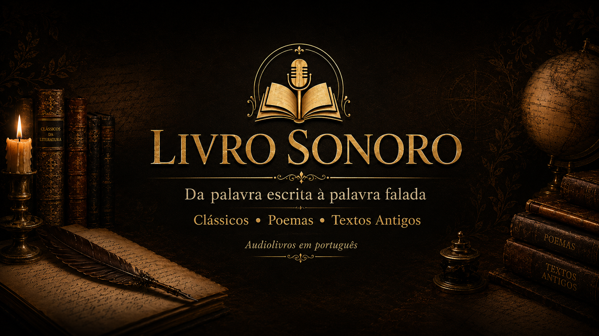

Biblioteca Virtual 1.0
Livro
Sonoro
Uma biblioteca brasileira independente de audiolivros em português. Clássicos, poemas, textos antigos e obras autorais para atravessar o tempo pela voz.

Corredor da biblioteca
Uma estante sonora e digital
O Livro Sonoro reúne audiobooks, e-books, PDFs, textos de apoio, obras autorais, pesquisa literária e futuros colecionáveis em uma experiência única de biblioteca.
Site One Page
Uma única página, várias prateleiras
O site foi organizado como uma biblioteca vertical: a pessoa entra, entende o projeto, explora audiobooks, encontra eBooks/PDFs, vê a loja, conhece os colecionáveis e chega às formas de apoio sem se perder.
Portais da biblioteca
O que você encontra aqui
Quatro entradas principais para manter a página rica, mas ordenada.
Audiobooks
Clássicos, textos antigos, literatura russa, brasileira, gótica e obras autorais.
📚eBooks e PDFs
Domínio público, materiais de leitura e arquivos úteis para estudantes.
🛒Loja literária
eBooks próprios, livros físicos, afiliados, parceiros e futuras edições especiais.
🏺Colecionáveis
Miniaturas, esculturas, marcadores com QR Code e caixas literárias.
Primeira prateleira
Mais importantes agora
As obras que melhor representam o começo da Biblioteca Virtual Livro Sonoro.
Catálogo
Biblioteca completa
18 obras
Organização editorial
Coleções
A biblioteca foi pensada como prateleiras de escuta, não como lista solta de vídeos.
Romances, novelas, clássicos universais e obras de formação.
Machado, Poe, narrativas curtas e textos perfeitos para escuta rápida.
Poemas clássicos, leitura em voz alta e peças para escuta contemplativa.
Textos antigos, livros proibidos, anjos caídos e tradições espirituais.
Dostoiévski, Tolstói e os grandes dramas da alma humana.
Machado de Assis, Euclides da Cunha e literatura brasileira em voz alta.
Drácula, Kafka, sombras, metamorfoses e horror literário.
Poder, estratégia, sabedoria e clássicos para pensar.
Obras calmas, profundas e belas para ouvir à noite.
Obras de E. S. Almeida e o universo próprio do Livro Sonoro.
Curadoria, narração e edição com identidade brasileira independente.
Wells, distopias, futuros possíveis e imaginação especulativa.
Obras de iniciação literária, fantasia, fábulas e escuta familiar.
Conteúdos de desenvolvimento pessoal com cuidado autoral e curadoria segura.
Textos sobre dor, fé, sociedade, morte, esperança e condição humana.
Leitura livre
eBooks, PDFs e domínio público
Espaço para estudantes, leitores e pesquisadores acessarem textos, PDFs e materiais de apoio.
Pesquisa e estudo
Textos de apoio
Uma área futura para guias, ensaios, contexto histórico, bibliografias e material acadêmico.
Loja literária
eBooks à venda e parceiros
Espaço para livros de E. S. Almeida, e-books próprios, livros físicos, links de afiliado e parcerias editoriais.
Sustentabilidade
Como a biblioteca pode se manter
Primeiro com apoio direto e produtos próprios; depois com assinaturas, parceiros e anúncios controlados.
Apoio direto
Pix, Apoia.se, membros do YouTube, venda de eBooks e links para livros próprios.
Assinatura
Clube de ouvintes com episódios antecipados, PDFs de apoio, bastidores e votação das próximas obras.
Afiliados e editoras
Indicação de edições físicas, eBooks autorizados, livrarias, cursos, clubes de leitura e escolas.
Anúncios com cuidado
Espaços discretos de patrocínio cultural, sem destruir o visual premium da biblioteca.
Institucional
Quem somos
Uma biblioteca independente em construção, criada por Everton S. Almeida.
Livro Sonoro
O Livro Sonoro é um projeto brasileiro independente de literatura em áudio. A proposta é transformar clássicos, poemas, textos antigos e obras autorais em experiências de escuta acessíveis, bonitas e organizadas.
Da palavra escrita à palavra falada: clássicos, poemas e textos antigos para atravessar o tempo.
Contato
E-mail/Pix: canallivrosonoro@gmail.com
YouTube: @livrosonoropodcast
Instagram: @livro.sonoro
Autor: E. S. Almeida / Everton S. Almeida
Apoio independente
Apoie a biblioteca
O Livro Sonoro é um projeto brasileiro independente. Sua contribuição ajuda a manter novas leituras, capas, edições, publicações, legendas e a construção desta Biblioteca Virtual.
Sustentação do projeto
Formas de apoio
Além do Pix, a Biblioteca pode apontar para assinaturas, livros, links de afiliado e futuras parcerias culturais.
Pix
Apoio direto para manter capas, edições, narrações e publicações do Livro Sonoro.
Apoia.se
Use este espaço para um clube mensal: episódios antecipados, bastidores e votação de próximas obras.
Em breveLivros
Vitrine para obras de E. S. Almeida, como O Diabo Justo e outros projetos autorais.
Ver livrosParceiros
Espaço futuro para editoras, livrarias, escolas, clubes de leitura e marcas culturais.
ContatoEspaço para parceiros culturais: este bloco pode virar uma área de anúncios próprios, recomendações de livros, links de afiliado ou patrocínio direto. Para começar, é melhor usar apoios e parcerias manuais antes de depender de anúncios automáticos.
Contato final
Entre em contato ou apoie o projeto
Use este espaço para receber propostas, parcerias, sugestões de obras, contatos de escolas, editoras, leitores e ouvintes.